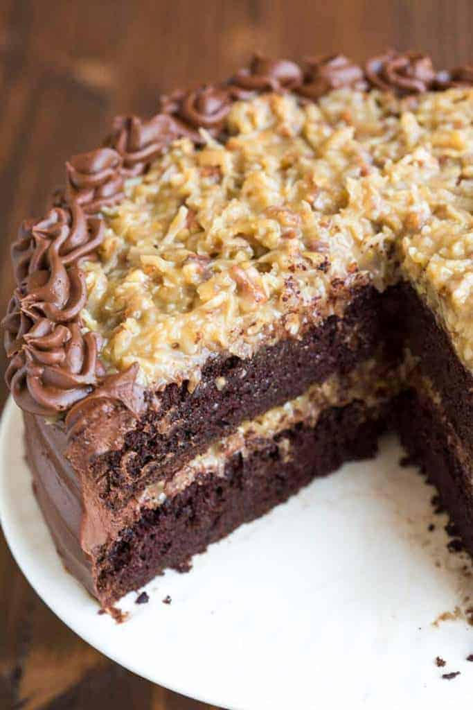
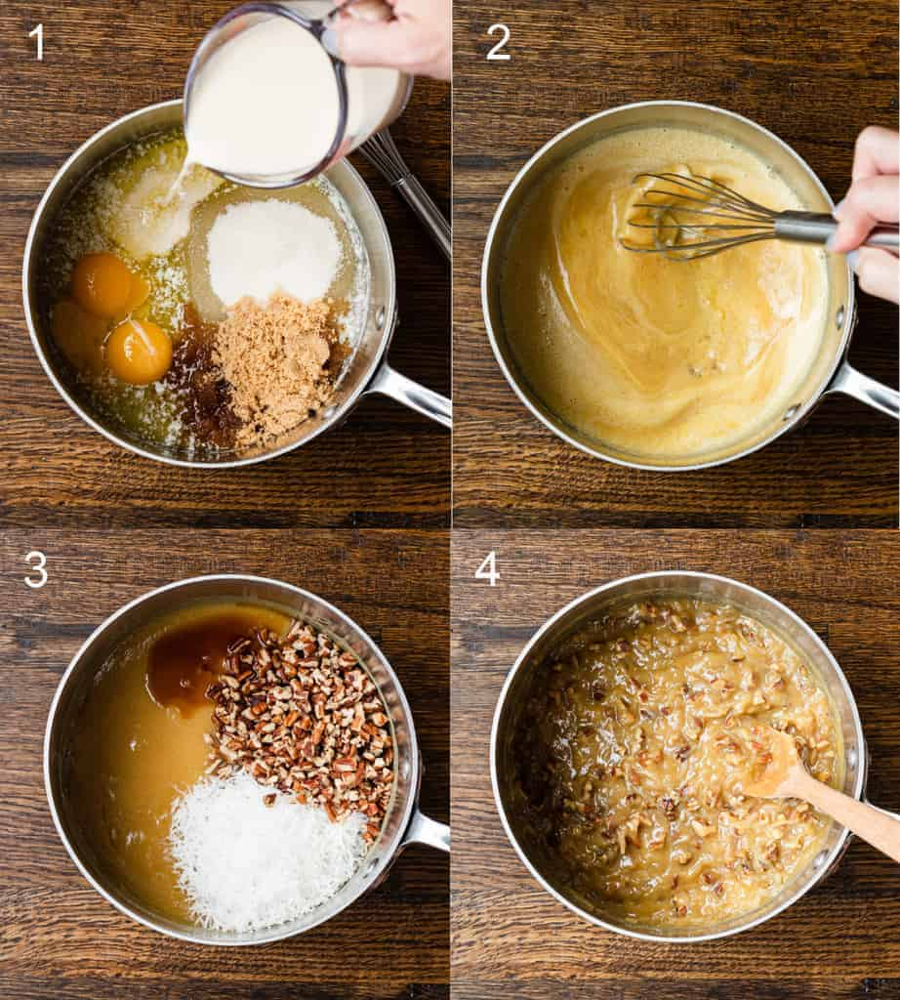
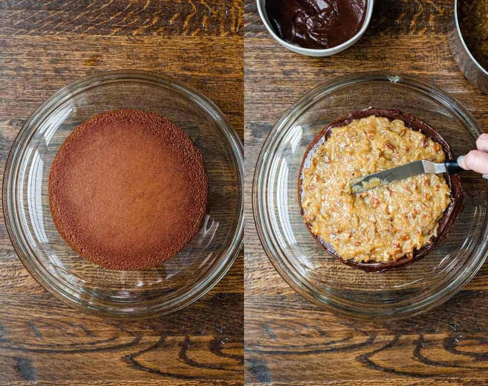

12/Feb
German Chocolate Cake
I have long associated German Chocolate Cake with Father's Day, althought I'm not entirely sure why, I think I remember my mom making it for my dad once or twice growing up (althought never on Father's Day, ironically) and the correlation must have stuck somewhere along the way.

I think the hundreds of reviews of this recipe speak for themselves, but let me add my own testament that this German Chocolate Cake is THE CAKE that every person in my family requested for their birthday growing up. I was super lucky, being a twin, because my mom would make both of our favorites: German chocolate cake for my sister, and carrot cake for me!
What is German Chocolate Cake?
The name German chocolate cake is a little deceiving as it is not actually a German dessert and traditionally the cake is a lighter colored cake with a mild chocolate taste and the entire cake is usually covered in coconut pecan frosting. My family's version is a chocolate cake with chocolate frosting covering the cake and coconut frosting on top and in the center of the cake. This cake seriously can't be beat, especially if you're a chocolate lover!
How to Make German Chocolate Cake:
1. Make the chocolate cake: Combine dry ingredients (sugar, flour, cocoa, baking powder, baking soda and salt). Combine wet ingredients (eggs, buttermilk, oil and vanilla). Mix together and stir in boiling water.
2. Bake at 375°F: Pour batter into prepared 8 or 9-inch round baking pans. I like to cut a round piece of wax or parchment paper for the bottom of the pan also, to make sure the cake comes out easily.
3. Make the German Chocolate Frosting: Combine brown sugar, granulated sugar, butter, egg yolks, and evaporated milk in a saucepan and bring the mixture to a low boil over medium heat. Stir constantly until the mixture thickens. Remove from heat and stir in vanilla, nuts and coconut. Allow to cool completely before layering it on the cake.
4. Make chocolate frosting: Melt butter, stir in cocoa powder, slowly add powdered sugar and milk, beating to spreading consistency. Add small amount additional milk, if needed to thin the frosting, or a little extra powder, until you reach your desired consistency. Stir in vanilla.
5. Assemble: Place one of the cake rounds on your serving stand or plate. Smooth a thin layer of chocolate frosting over the cake layer, and then spoon half of the coconut frosting on top, spreading it into a smooth layer. Leave about ½ inch between the filling and edge of cake. Stack the second cake round on top. Smooth chocolate frosting over the entire cake. Spoon remaining coconut frosting on top of the cake.
